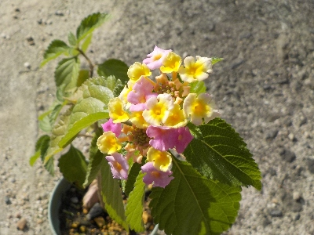
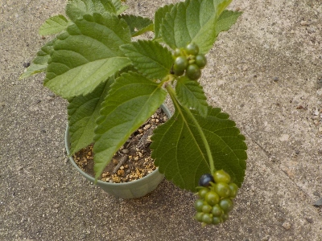
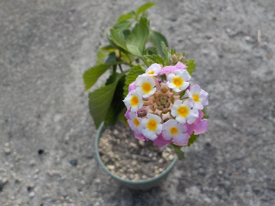
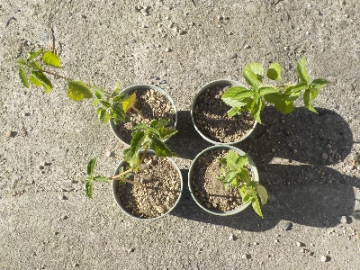
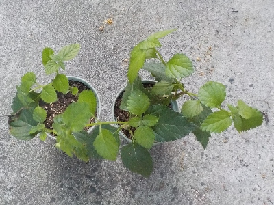
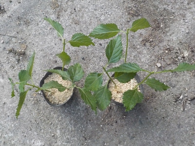

ランタナの開花期間は長いですね。
2024/11/04

また花が咲きました。
開花期間が長いのはいいですね。そのぶん繁殖力が強いので植えてはいけないなんてネットにありますが、そんなに気にする必要はないんじゃないかな。
嫌なら抜けばいいし。
2024/11/04

また花が咲きました。
開花期間が長いのはいいですね。そのぶん繁殖力が強いので植えてはいけないなんてネットにありますが、そんなに気にする必要はないんじゃないかな。
嫌なら抜けばいいし。
2024/09/27

花が咲いた後に実が出来ました。
タネはいらないので、取り除きました。
2024/09/07

まだ木は小さいですが、もう花が咲きました。
1本1鉢にしましたが、まだ水が足りないみたいでしおれています。鉢のサイズアップが必要です。
2024/08/16

1鉢に2本植えていたランタナですが、水の消費量が多くすぐにしおれるので1本1鉢にしました。
これでダメだったら鉢のサイズを大きくします。
2024/07/06

ポットの下から根っこが沢山出ていたので、鉢に植え替えしました。
１鉢に１本づつ植えた方がいいですが、鉢を沢山使うのがもったいなうので２本づつ植えました。
2024/06/04

知らない会社の花壇でランタナ茂って咲いていました。派手な花なので目立つ場所にあるといいですね。
我が家のランタナは畑にあるので目立っていないです。挿し木して増やして、鉢植えを玄関に置こうかと思いました。
強い植物なので、年内に開花してくれないかな。
畑仕事じゃないよ。